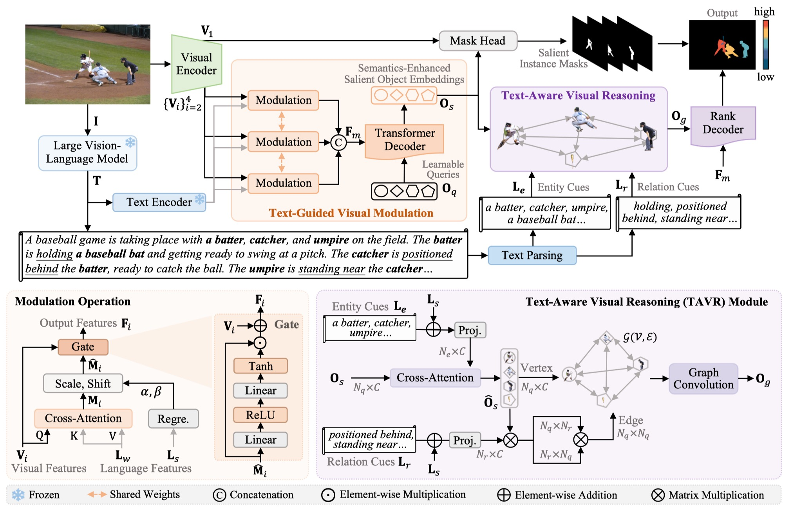
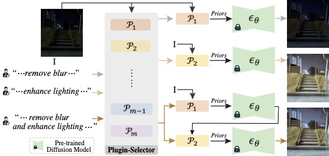
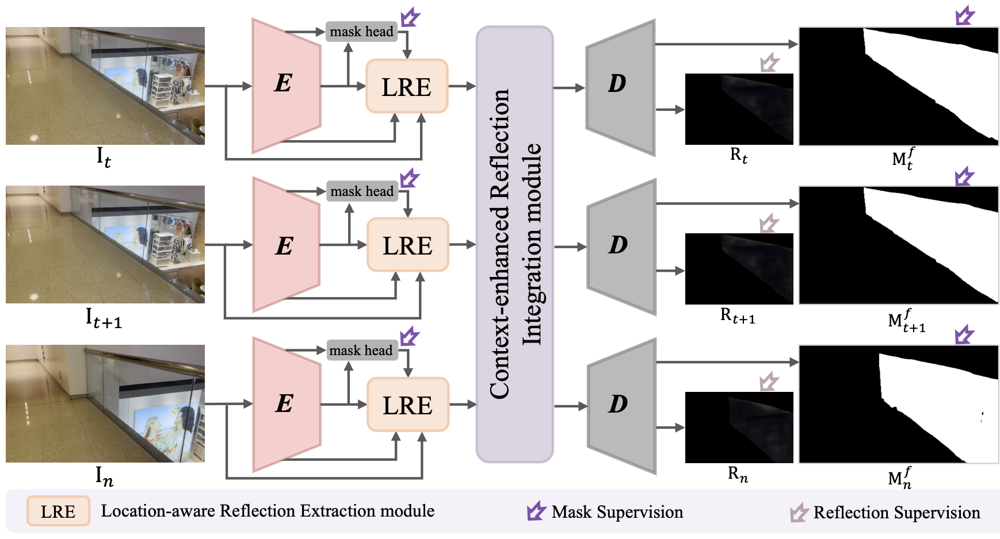
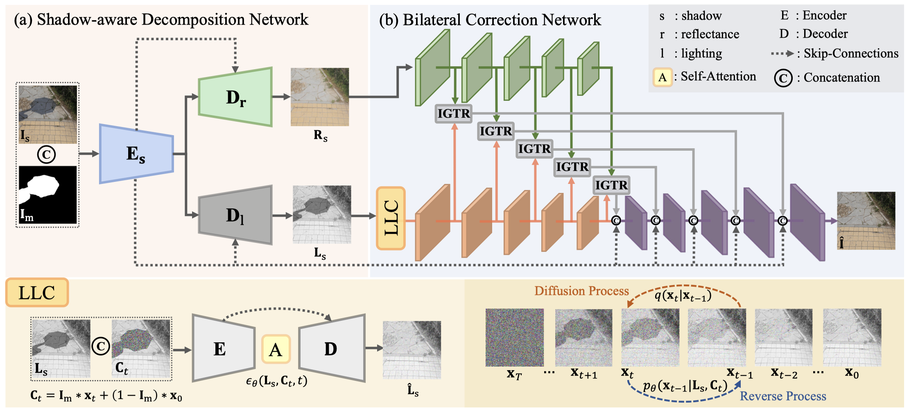
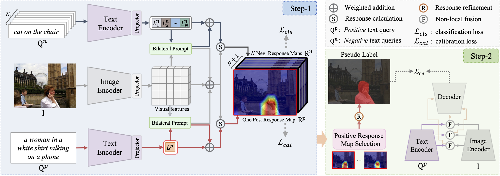
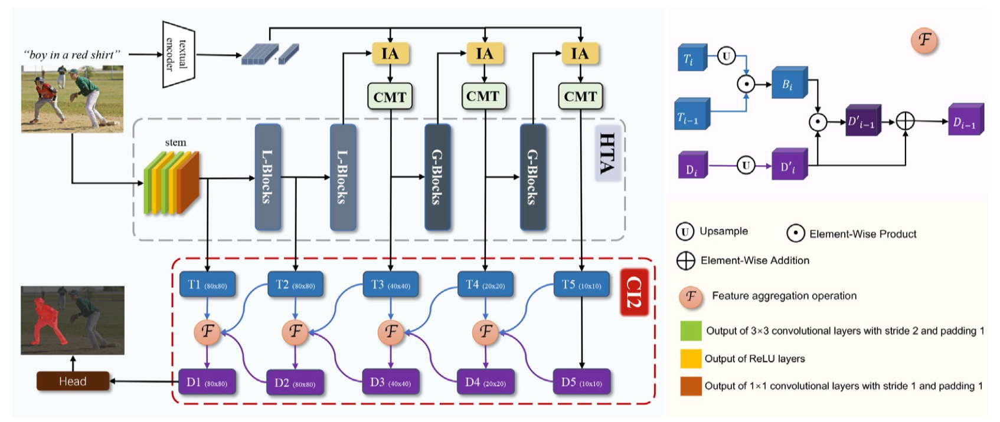

I am a first-year Ph.D. student at City University of Hong Kong, supervised by Prof. Rynson W.H. Lau. Previously, I obtained my master's degree from Dalian University of Technology, under the supervision of Prof. Lihe Zhang. My research interests lie in vision and language. I am currently working on language-guided image and video understanding.
News
- [2025.02] 1 paper was accepted by CVPR 2025.
- [2024.02] 1 paper was accepted by CVPR 2024.
- [2023.12] 2 paper was accepted by AAAI 2024.
- [2023.07] 1 paper was accepted by ICCV 2023.
Publications

Language-Guided Salient Object Ranking
Fang Liu, Yuhao Liu, Ke Xu, Shuquan Ye, Gerhard Petrus Hancke, Rynson W. H. Lau
Conference on Computer Vision and Pattern Recognition (CVPR), 2025
[Paper]





Academic Services
- Conference Reviewer: CVPR, ICCV, ECCV, AAAI, NeurIPS
Awards
China National Scholarship, 2019